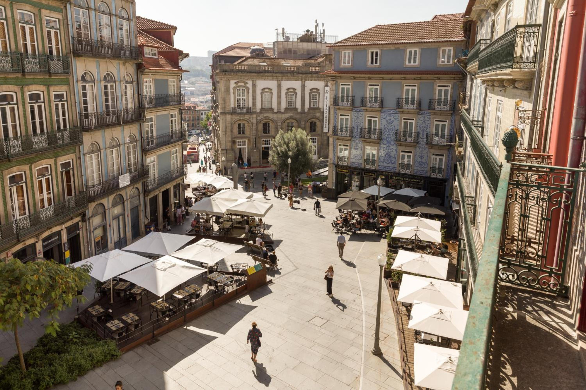
Apartments2Stay · Largo de São Domingos
Flores
Estúdio 35 m² ou Superior 46 m² · até 2 pessoas
- 35–46m²
- 1quarto
- 1casa de banho
- 2pessoas
O apartamento
Onde começaa Rua das Flores.
Dois tipos de apartamento num prédio reabilitado do Largo de São Domingos, com azulejos e uma escada em caracol. Segundo a Apartments2Stay, o edifício é do século XVI.
O Estúdio tem 35 m² e janela para o pátio interior; o Superior tem 46 m², varanda com vista para a cidade e ar condicionado. Os dois têm um quarto com cama de casal grande, sala com sofá-cama, cozinha e casa de banho privativas.
A visita
Da ruaà varanda.
Nove passos, da Rua das Flores à varanda sobre o largo. Desça a página para entrar, ou carregue em «Ver a visita».
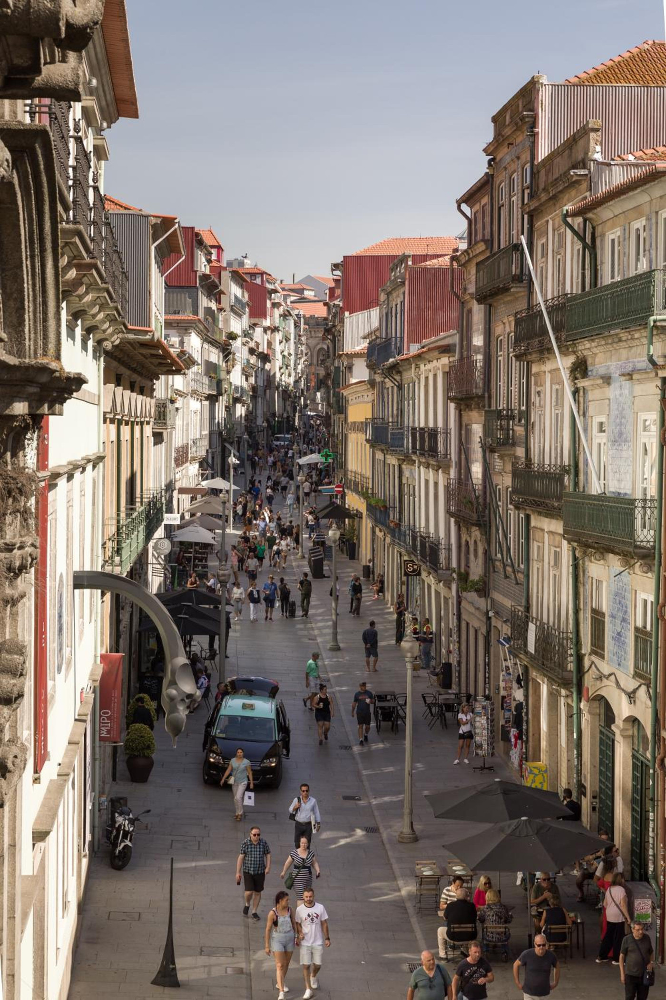
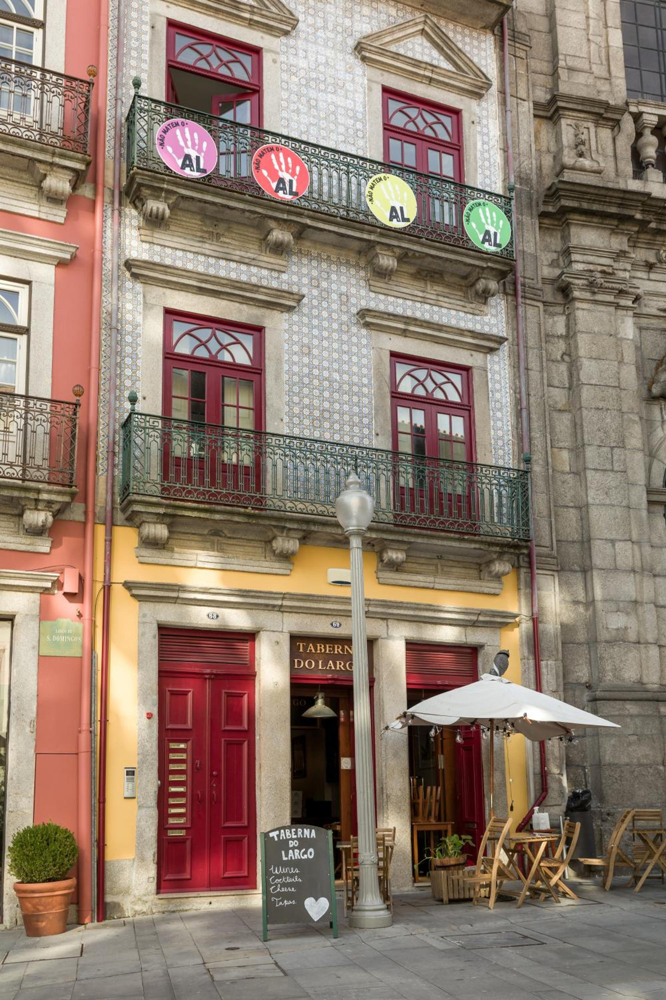
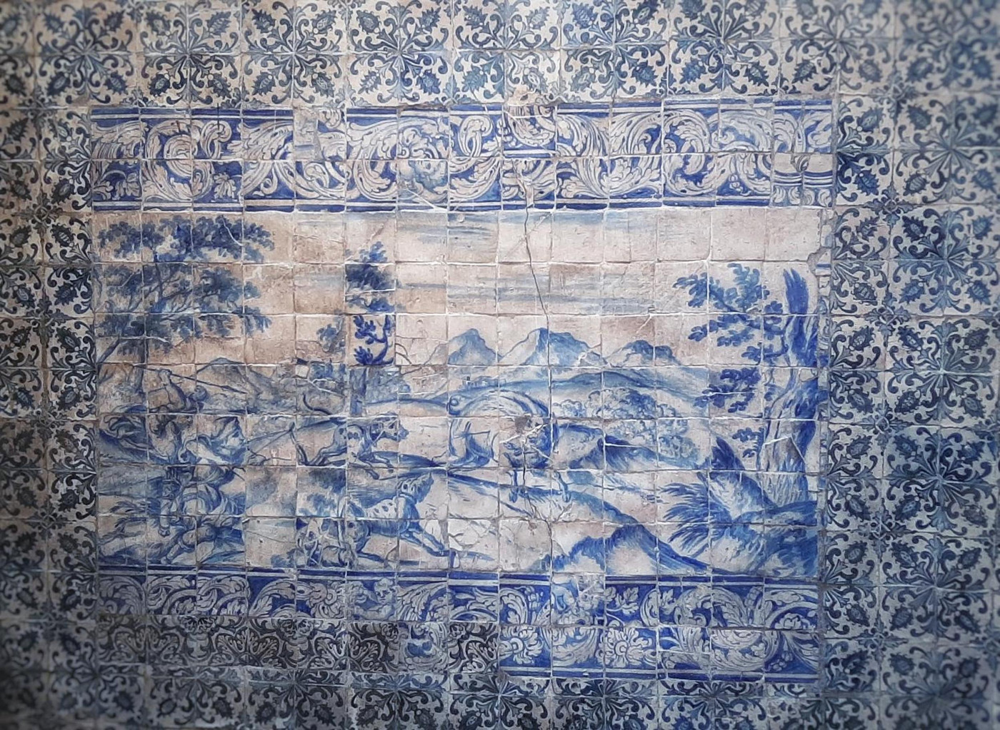
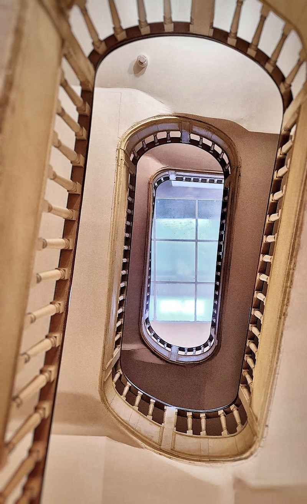
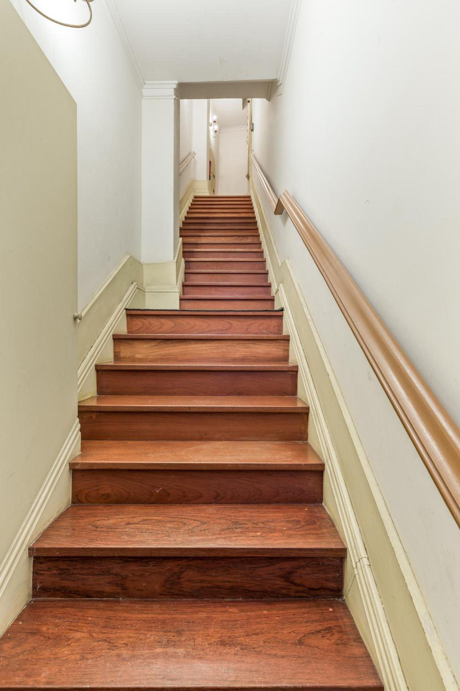
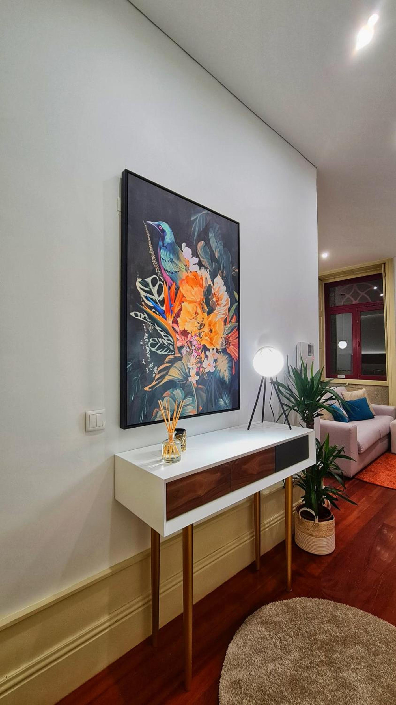
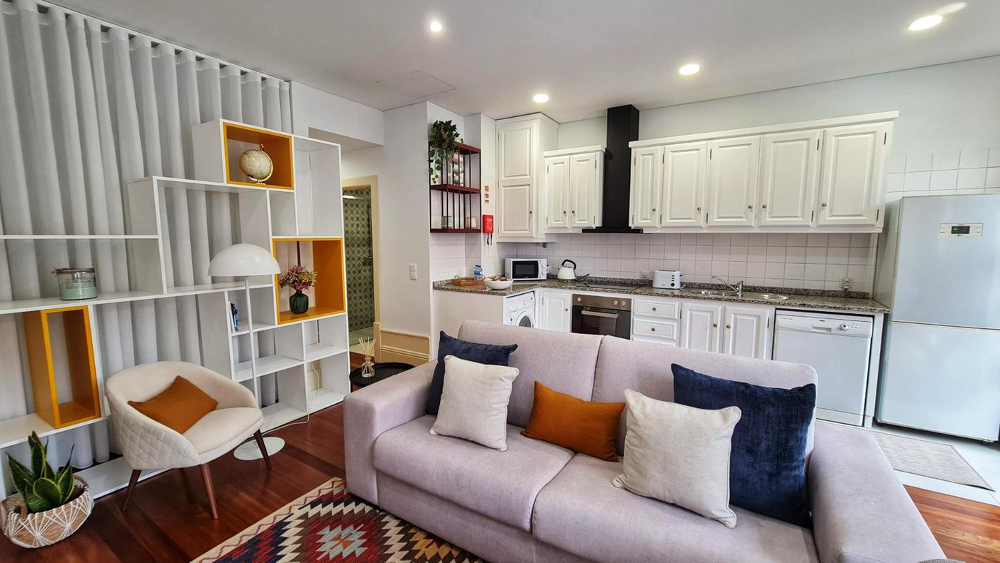
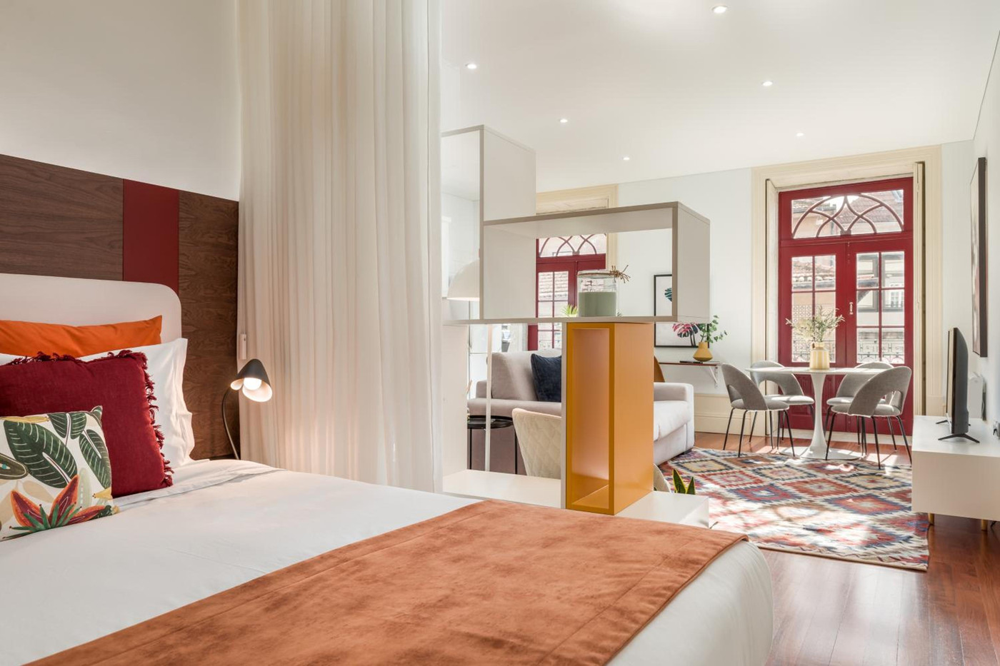
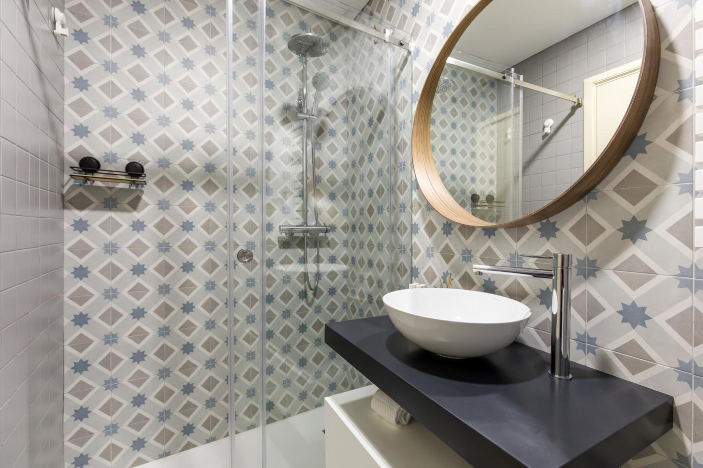
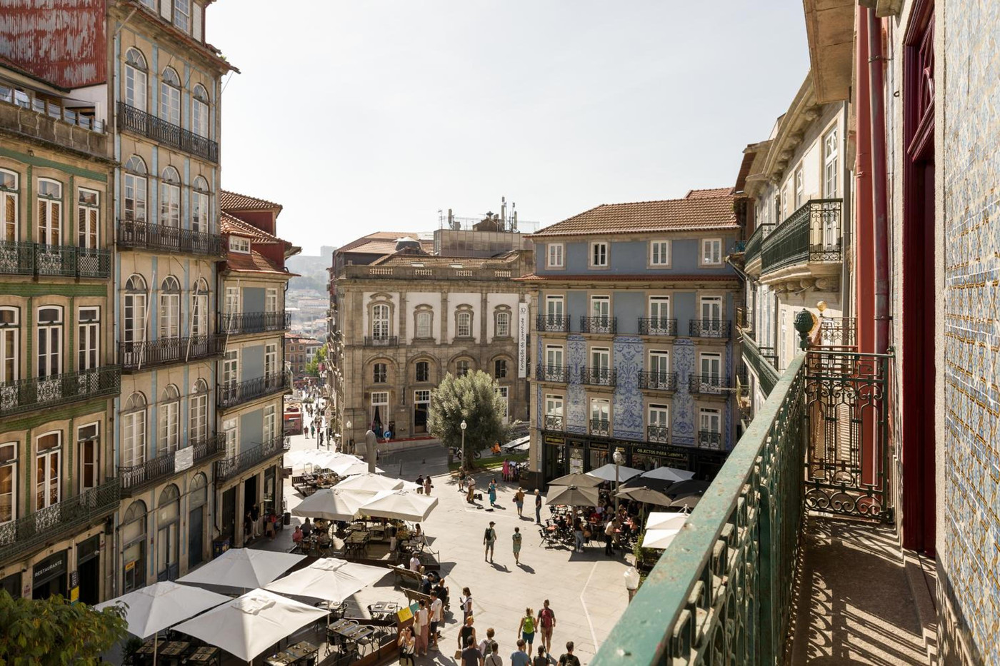
Por dentro
Divisãoa divisão.
As fotografias dos dois tipos: o Superior, com a cozinha branca, e o Estúdio, com a cozinha de madeira.
- 01
A sala
Sofá-cama, mesa e televisão; no Superior, as janelas dão para o largo.
- 02
A cozinha
Privativa em cada apartamento: branca no Superior, de madeira no Estúdio.
- 03
O quarto
Um quarto com cama de casal grande e roupeiro.
- 04
A casa de banho
Privativa, com duche, espelho redondo e lavatório sobre a bancada.
- 05
O Estúdio e o pátio
O Estúdio dá para o pátio interior do prédio, com azulejos.
No apartamento
Comodidades
O ar condicionado e a varanda são do Superior.
Wi-Fi gratuito
Em todo o apartamento.
Cozinha privativa
Com mesa para as refeições.
Sala com sofá-cama
Nos dois tipos de apartamento.
Varanda
No Superior, sobre o largo.
Ar condicionado
No Superior.
Berço grátis
Até aos 3 anos, a pedido.
Cama extra
10 € por pessoa e noite, a partir dos 4 anos, a pedido.
Transfer do aeroporto
A pedido, com custo.
Largo de São Domingos · Rua das Flores
Localização
No Largo de São Domingos, onde começa a Rua das Flores.
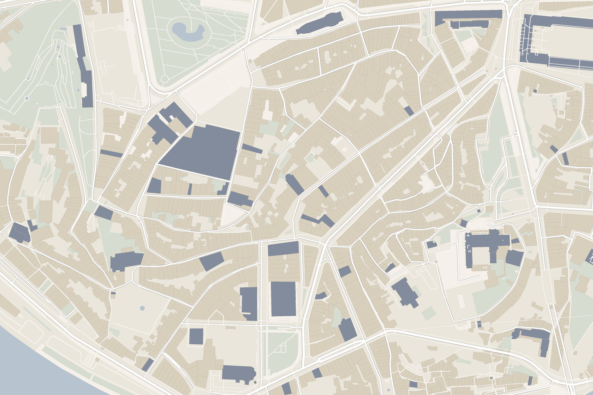
Túnel da RibeiraAvenida Dom Afonso HenriquesCampo dos Mártires da PátriaRua dos ClérigosRua das FloresRua de TrásRua de Ferreira Borges Palácio da BolsaMSão BentoMuralhas Fernandinas do PortoHard ClubPalacete de BelomonteAntiga Cadeia e Tribunal da Relação do PortoFeitoria BritânicaTorre Medieval Apartments2Stay I Porto - Flores 200 mLargo de São Domingos, 684050-545 Porto
- Palácio da Bolsa250 m
- Ribeira350 m
- Estação de São Bento400 m
- Praça da Liberdade400 m
Distâncias aproximadas, calculadas pelo Booking.
Como chegarAntes de chegar
Antesde chegar.
Regras do anúncio no Booking (novembro de 2026), a confirmar com a Apartments2Stay. O berço e a cama extra dependem da disponibilidade.
- Check-in
- 16:00 – 00:00, com aviso da hora
- Check-out
- até às 11:00
- Acesso
- por escadas, sem elevador
- Fumar
- não
- Festas
- não
- Animais
- não são admitidos
Apartments2Stay
Outras formas de ficar.


Apartments2Stay I Porto - Flores 28 fotografias